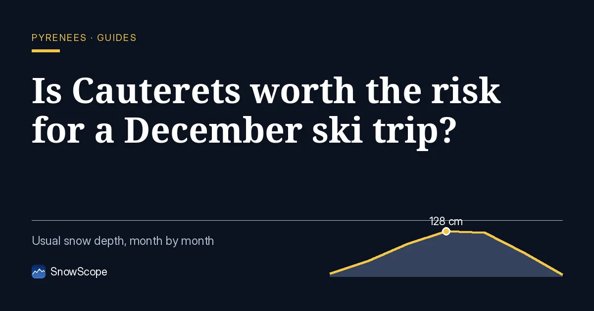

واش Cauterets كتستاهل المغامرة فالسفرة ديال التزلاج فديسمبر؟
Cauterets اختيار مغري لرحلة اقتصادية، ولكن التلج فبداية ديسمبر غالبا كيكون قليل. إلا بغيتي أحسن ظروف، التاريخ ديالنا كيبين بلي خاصك تسنى حتى للسيمانة اللخرة ديال الشهر. واخا الأثمنة رخيصة، راك كدير مقامرة على التلج الطبيعي فـ French Pyrenees.
شوف توقعات التلج مباشرة ديال Cauterets فالتطبيق ديال SnowScopeالعلو ديال التلج، التنبيهات والخريطة 3D، فابور.
الجواب الصريح هو الأول
Cauterets محطة صغيرة وساهلة: المنطقة المرسومة فيها 25 كم ديال البيستات و 9 ديال التيليسييجات، بفرق علو ديال 695 م. اللي كيقلب على بيستات جداد كل نهار غادي يعرفها بالزربة، ولكن بلاصة هادية باش ترجع للتزلج على راحتك.
أهم حاجة خاصك تعرفها هي أن أدنى مصعد كيبدا من 1725 م. هادشي عالي بزاف بالنسبة لـ Pyrenees، وهادشي كيعاون ملي كيكون الحال سخون. ولكن، العلو المعتاد د التلج فديسمبر فهاد القاعدة هو غير 23 سم. فشي شتوة ناقصة، بحال 1989-90، هاد العلو يقدر يهبط حتى لـ 2 سم، وهادشي كيخلي التزلاج مستحيل فالبلاصة التحتانية.

بداية ديسمبر مقابل نهايتو بالأرقام
توقيت الرحلة ديالك كيغير كلشي فـ Cauterets. فالسيمانة اللولة، من 1 لـ 7 ديسمبر، القاعدة فـ 1725 م كيكون فيها 30 سم ديال التلج فـ 28 % فقط من الشتوات اللي فاتو. إلا مشيتي فالسيمانة ديال 15 لـ 21 ديسمبر، هاد الاحتمال كيبقى فـ 37 %. كتكون واحد الانتظارية مقلقة باش يوصل التلج.
الأرقام كيبانو حسن بزااااف إلا حجزتي فالعشر اللخرة ديال الشهر. من 22 لـ 28 ديسمبر، احتمال يكون عندك 30 سم أو كتر فالبلاصة التحتانية كيطلع لـ 54 %. فالفوق د المصاعد، اللي كيوصل لـ 2420 م، احتمال يكون عندك 30 سم د التلج هو 72 % خلال ديك السيمانة اللخرة. العلو المعتاد فـ 15 ديسمبر فالفوق هو 34 سم، يعني كلما بقيتي فالبلايص العاليين، كلما كانت الرحلة ديالك أضمن.
شحال كيتقام باص المصاعد
حاجة وحدة ما تبدلاتش هي أن Cauterets باقة رخيصة بزاف لعطلة الشتا. باص ديال نهار واحد للكبار كيدير 46 EUR، وهو ثمن مناسب لـ 25 كم ديال البيست. إلا كنتي غاتبقى سيمانة كاملة، الباص ديال 6 أيام للكبار كيدير 276 EUR. هاد الأثمنة كتخلي الرجوع لهاد الرياضة ساهل بلا ما تخسر ثروة.
اليوم هو 13 نوفمبر 2026، والجبل حاليا كيتسنى الشتا. كاين 0 سم د التلج فالبلاصة التحتانية والوسطانية. الفوق د المصاعد فـ 2420 م حتى هو فيه 0 سم، ولكن التوقعات كتقول كاين 8 سم ديال التلج جديد فـ 7 أيام الجاية. ما بين 13 نوفمبر و 26 نوفمبر، التوقعات ديال جوج سيمانات للوسط والفوق كتبين مجال ما بين 9 سم لـ 39 سم، يعني الموسم عاد كيبدا يفيق.
Cauterets ولا Grand Tourmalet
ملي كتقارن Cauterets بـ Grand Tourmalet، خاصك تختار ما بين الحجم والعلو. Grand Tourmalet كبر بزااااف بـ 54 كم ديال البيست و 29 مصعد. حتى هي غالية كتر، بباص نهار واحد للكبار بـ 55 EUR وباص 6 أيام بـ 294 EUR. ولكن، الكبير ماشي ديما حسن فديسمبر المعتاد.
أدنى مصعد فـ Grand Tourmalet كاين فـ 1459 م، اللي هو هابط بزااااف على القاعدة ديال 1725 م فـ Cauterets. على قبل هادشي، العلو المعتاد د التلج فديسمبر فـ Grand Tourmalet هو غير 15 سم. حتى فالفوق، Cauterets عادة فيها تلج كتر، بـ 42 سم مقارنة بـ 36 سم فالفوق د Grand Tourmalet. لرحلة فديسمبر، القاعدة العالية فـ Cauterets هي رهان أضمن.
واش ديسمبر ولا خايب؟
التاريخ ديال التلج عندنا ديال 46 شتوة اللي فاتو كيبين اتجاه واضح ما يمكنش نتجاهلوه. فـ 15 شتوة اللولة من 1980-81 لـ 1994-95، الوسط د الجبل فـ 2072 م كان عندو معدل ديال ديسمبر كيوصل لـ 35 سم. فـ 15 شتوة اللخرة من 2011-12 لـ 2025-26، هاد المعدل هبط لـ 23 سم.
الشتوة اللي فاتت، فـ 2025-26، المعدل ديال ديسمبر فالبلاصة التحتانية كان غير 17 سم. واخا الذروة د الموسم فالفوق تقدر توصل لـ 180 سم، هادشي غالبا كيوقع من بعد ديسمبر بمدة. فشتوة معتادة، أول تلج كيشد فالفوق كيوصل فـ 1 نونبر وفالبلاصة التحتانية فـ 4 نونبر. البداية كتكون معطلة، داكشي علاش الصراحة مع الأرقام هي الطريقة الوحيدة باش تخطط لرحلة مزيانة.
نصايح للي كيتزلجو
- حجز الرحلة ديالك فالسيمانة ديال 22-28 ديسمبر ملي كيكون احتمال ديال 50 سم فالفوق هو 59 %.
- بقى فالبلايص اللي قراب للفوق د المصاعد فـ 2420 م فين التلج كيكون عادة واصل لـ 42 سم فديسمبر.
- ختار Cauterets على Grand Tourmalet إلا بغيتي باص يومي رخيص بـ 46 EUR وقاعدة عالية.
- شوف النشرة ديال الانهيارات قبل ما تفكر تخرج من 25 كم ديال البيست المحددة.
- قلب على الباص ديال 6 أيام بـ 276 EUR فالموقع الرسمي باش تبقى الرحلة ديالك اقتصادية.
خرائط أخرى (مواقع خارجية)
المراجع والمصادر
- N'PY, Cauterets official ski pass prices 2026-27 www.n-py.com/fr/cauterets/forfaits-ski
- N'PY, Grand Tourmalet official ski pass prices 2026-27 www.n-py.com/fr/grand-tourmalet/forfaits-ski
- SnowScope, December snow at three heights and today's snow map snowscope.app/
على هاد الأرقام
الأرقام ديال التلج: التاريخ ديال التلج ديال SnowScope، 46 شتوة اللي فاتت (1980-81 حتى ل 2025-26) فتلاتة ديال العلوات فكل محطة (موديل ديال اللي فات مصحح بالعلو: تقدير لمنطقة، ماشي قياسات ديال المحطة)؛ أرقام دجنبر محسوبة من العلو اليومي ديال التلج فهاد الشتوات. التلج دابا والتوقعات ديال جوج سيمانات: توقعات SnowScope (من ECMWF و GFS، مجال ماشي وعد). التيليسييجات والبيستات: الخريطة ديال OpenSkiMap. الأثمنة: الصفحات الرسمية اللي لتحت، متشافة نهار 2026-11-13؛ الأثمنة تقدر تتبدل، شوف قبل ما تحجز.
النشرات الرسمية ديال الانهيارات: Météo-France – Bulletin d'estimation du risque d'avalanche
كيفاش تستاشهد بهاد المقال
للبحث، التعليم ولا الصحافة: الأرقام والرسومات تقدر تعاود تخدم بيهم بحرية تحت CC BY 4.0 مع هاد الاستشهاد.
SnowScope (2026), واش Cauterets كتستاهل المغامرة فالسفرة ديال التزلاج فديسمبر؟, https://snowscope.app/blog/ar/2026/11/cauterets-december-ski-honest-snow-odds-2026.html, تشاف ف 2026-11-14
SnowScope (Atlas Labs). (2026, November 14). واش Cauterets كتستاهل المغامرة فالسفرة ديال التزلاج فديسمبر؟. SnowScope snow reports. https://snowscope.app/blog/ar/2026/11/cauterets-december-ski-honest-snow-odds-2026.html
BibTeX
@misc{snowscope2026cauteretsdecemberskihone,
author = {{SnowScope (Atlas Labs)}},
title = {واش Cauterets كتستاهل المغامرة فالسفرة ديال التزلاج فديسمبر؟},
year = {2026},
month = nov,
howpublished = {\url{https://snowscope.app/blog/ar/2026/11/cauterets-december-ski-honest-snow-odds-2026.html}},
note = {Published 2026-11-14 17:41 UTC; accessed 2026-11-14}
}· CC BY 4.0 · الطريقة، الداتا والأدوات →
Cauterets: التلج والحرارة حسب العلو، هاد الشتا مقارنة مع اللي فاتت (الأدوات) →
تابع Cauterets
فابور: ميساج ملي يجي التلج، والتوقعات كل صباح.